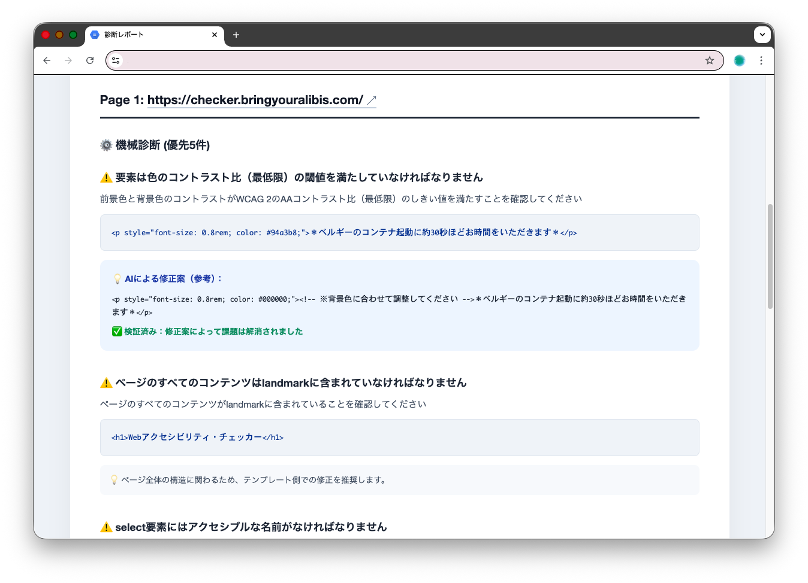
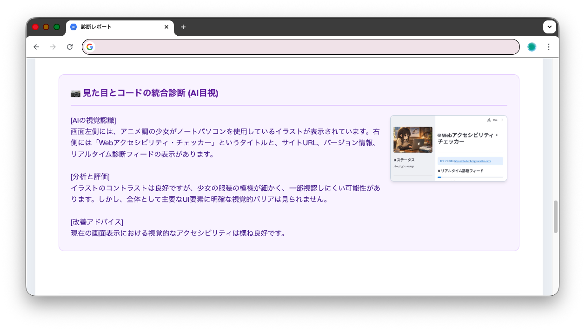
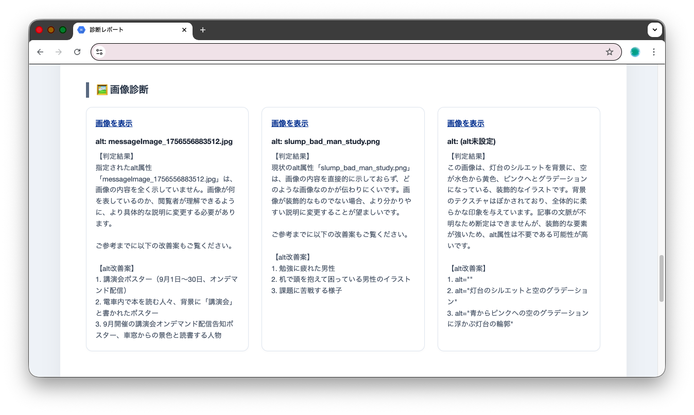

あなたのデザインをより良くするための『優しいアドバイザー』。
障害を個人の問題ではなく「サイト側の障壁」と捉え、専門用語を控えた前向きな言葉で改善を支援します。 否定的なエラー表示で責めるのではなく、より良い表現を共に見つけるためのパートナーです。
プライバシーを守る「情報の使い捨て」設計
データはメモリ内で処理され、即座に破棄。
AIの学習にも利用されません。
世界基準の機械チェックと、最新AIによる「目」と「脳」を組み合わせた独自の診断アルゴリズム。
世界的に信頼されている検査エンジン「axe-core」を採用。WCAG 2.0/2.2やJIS X 8341-3に基づき、コード上の不備を正確に特定します。
AIがブラウザ上の表示を実際に「フォト診断」。人間と同じように画面を眺めることで、コードだけでは判別しにくい視覚的な使いやすさを評価します。
生成AI「Gemini」が画像の内容を深く理解。文脈に合わせた最適な「代替テキスト（alt属性）」の改善案を、あなたの代わりに考えます。

優先順位がわかる機械診断
修正コードの例もセットで提示

AIによる視覚的な評価
デザインの意図を汲み取った分析

心強いaltテキスト提案
複数の選択肢から最適なものを選べる
| 比較項目 | 一般的なツール | 本サービス |
|---|---|---|
| 手軽さ | インストールが必要 | URL入力のみ |
| 日本語理解 | 機械的なチェックのみ | AIが文脈を解釈 |
| 修正案の提示 | 技術的な説明のみ | 具体的で親切な案 |
QRコードを読み取ると、A11yチェッカーにアクセスできます